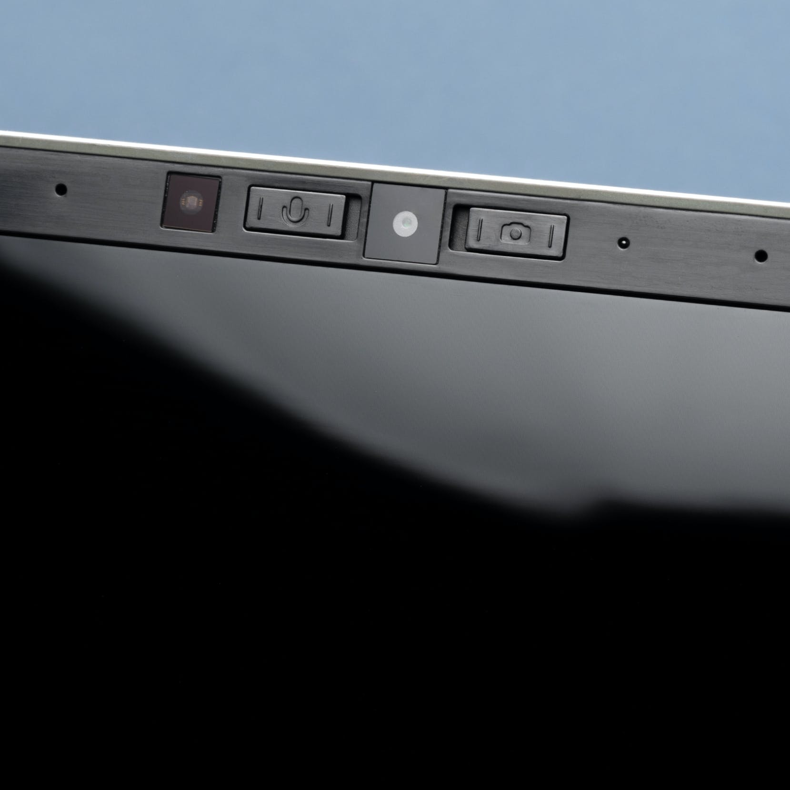
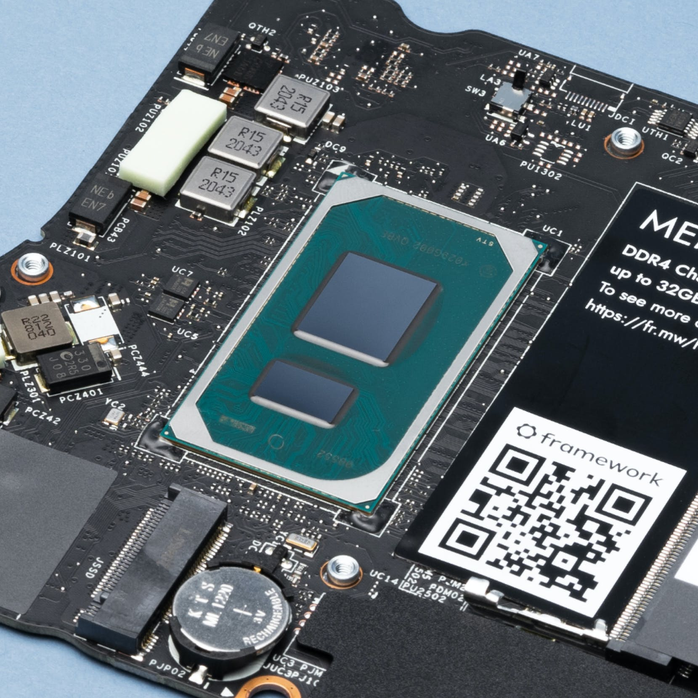
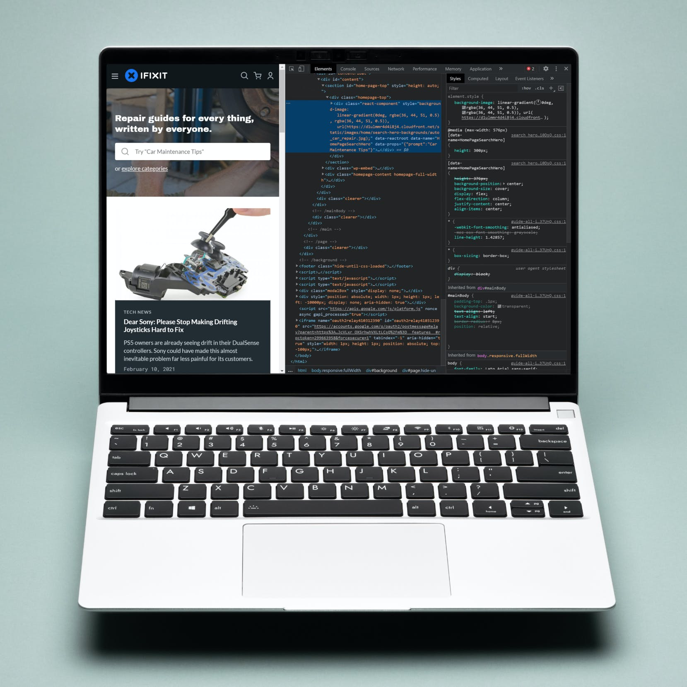
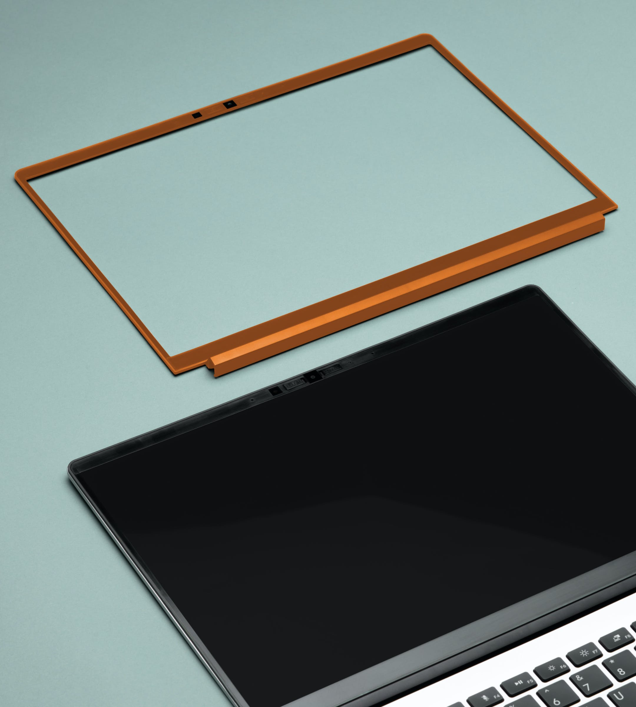

Il Framework Laptop è dotato di un alloggiamento in alluminio fresato spesso 15,8 mm e pesa 1,3 kg.
Ha un display da 13,5 pollici, 2256x1504, 3: 2, 400 nits, webcam 1080p60.
È alimentato dai processori Intel Core i5-1135G7, i7-1165G7 o i7-1185G7 Tiger Lake con grafica Intel Xe.

La scheda madre che ospita il processore è aggiornabile, quindi può essere sostituita con una con un processore più nuovo e più veloce non appena sarà disponibile in futuro.

Il Framework Laptop ha anche un sistema di scheda di espansione che consente all'utente di scambiare le porte sul lato del laptop.
Puoi sostituirli a tuo piacimento e posizionarli su entrambi i lati del laptop.

Tra le altre cose che puoi modificare sono la lingua e il layout della tastiera, il colore per la cornice del display collegata magneticamente, la memoria interna, la memoria e la scheda Wi-Fi.
Parti come il display, la batteria e la tastiera sono facilmente riconoscibili con il QR code stampato sulla parte superiore in modo da poter scansionare e trovare la sostituzione per ogni parte.
Il Framework Laptop sarà disponibile preconfigurato con Windows 10 Home o Pro.